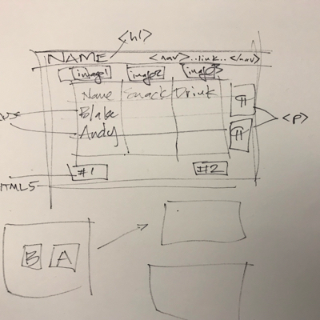

<!DOCTYPE html>
<html>
	<head>
		<meta charset="utf-8">
		<title></title>
	</head>
	<body>

	</body>
</html>
<!DOCTYPE html>
<html lang="en">
	<head>
		<meta charset="utf-8">
		<title>Blake Wagner</title>
		<style>

		img {

			width: 40%;
			height: 20%;
		}

		</style>
	</head>
	<body>
		<h1>Blake Wagner</h1>

<nav class="menu">
  <ul>
    <li><a href="#">Blake</a></li>
    <li><a href="https://andy-engel.github.io/ICE_1/index.html"> Andy</a>

		</li>

  </ul>
</nav>

<section>
	
    
    

<p>
	A quaestor (UK: /ˈkwiːstər/, US: /ˈkwɛstər/, Latin for investigator)[1] was a public official in Ancient Rome. The position served different functions depending on the period. In the Roman Kingdom, quaestores parricidii (quaestors with judicial powers) were appointed by the king to investigate and handle murders. In the Roman Republic, quaestors (also pluralized quaestores) were elected officials that supervised the state treasury and conducted audits. It was the lowest ranking position in the cursus honorum (course of offices).

<div>


<p>
	The cursus honorum (Latin: "course of offices") was the sequential order of public offices held by aspiring politicians in both the Roman Republic and the early Roman Empire. It was designed for men of senatorial rank. The cursus honorum comprised a mixture of military and political administration posts. Each office had a minimum age for election. There were minimum intervals between holding successive offices and laws forbade repeating an office.

<div>


	<iframe width="560" height="315" src="https://www.youtube.com/embed/uMqagO3UMbA" frameborder="0" gesture="media" allow="encrypted-media" allowfullscreen></iframe>

<div>


<form>

	<div>


		<label for="name">Name:</label>
		<input type="text" name="name" id = "name"></label><br>
		<label for="dob">DOB:</label>
		<input type="date" name="DOB" id="dob"><br>
	</div>
	<div>

						Please enter your choice of snack:
		<br>
		<input type="radio" name="snack" value="pizza"> Pizza<br>
  	<input type="radio" name="snack" value="donut"> Donut<br>
  	<input type="radio" name="snack" value="vegan"> Vegan Stuff<br>
		<br>
	</div>
	<div>

						Please enter your choice of drink:
		<br>
		<label><input type="radio" name="drink" value="coffee"> Coffee</label><br>
  	<label><input type="radio" name="drink" value="tea"> Tea<br>
  	<input type="radio" name="drink" value="water"> Water<br>
		</div>
		<div>
				<input type = "submit" value = "Submit">
			</div>
		</form>
		<div>
